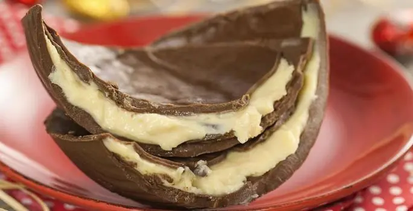
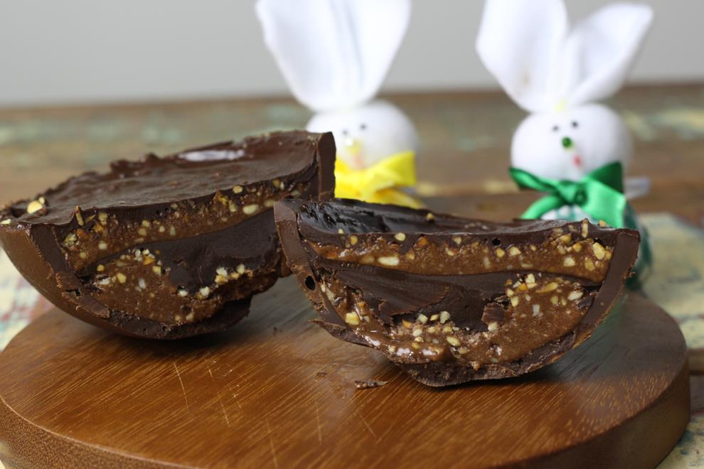

Tia zilda ovos de páscoa
Ovo de Páscoa Recheado

Ingredientes
- 1 kg de chocolate ao leite, ou meio amargo, ou blend (Garoto)
- Formas para ovos no tamanho de sua preferência
Sugestões de recheio
chocolate branco
- 1/2 kg de chocolate branco Garoto
- 1 caixinha de creme de leite
Beijinho
- 3 latas de leite condensado
- Coco ralado a gosto
Modo de preparo
- Derreta o chocolate em banho-maria.
- A água do banho-maria não pode ferver, se você tiver um termômetro melhor.
- A temperatura do chocolate derretido não pode ultrapassar 45°C, senão derrete o açúcar do chocolate e só queremos que derreta a manteiga de cacau.
- Tempere o chocolate conforme indicação da embalagem, pode passando o chocolate sobre o mármore rapidamente, até colocar um pouco nos lábios e sentir o chocolate frio, a temperatura depende do sabor do chocolate, verifique a embalagem.
- Coloque chocolate nas formas, distribua por toda ela.
- Vire para escorrer o excesso.
- Leve para gelar virado sobre papel manteiga.
- Se a camada ficar fina faça mais uma camada de chocolate.
- Após endurecer, espalhe o recheio de sua preferência e volte à geladeira por alguns minutos.
- Cubra o recheio com uma camada de chocolate e leve para gelar até endurecer.
-
Desenforme e embale a seu gosto
Recheio de chocolate branco
- Derreta o chocolate em banho-maria.
- Tire do fogo, acrescente o creme de leite e mexa até ficar homogêneo.
- Deixe esfriar para usar.
Recheio de beijinho
- Leve o leite condensado e o coco ao fogo, mexendo sempre, até engrossar.
- Deixe esfriar para usar.
Ovo de Páscoa Trufado (Maracujá)

Ingredientes
- 500 g de Cobertura de Chocolate ao Leite
- Formas para ovos no tamanho de sua preferência
Trufa de maracujá:
- 1 caixinha de Creme de Leite
- 1 colher (chá) de manteiga
- 1 colher (chá) de mel
- 250 g de chocolate branco picado
- meia xícara (chá) de suco de maracujá concentrado
Modo de Preparo
- Em um recipiente, coloque a Cobertura de Chocolate ao Leite e leve ao micro-ondas, em potência média, por 3 minutos, mexendo de minuto em minuto.
- Tempere o Chocolate conforme as orientações da embalagem e despeje em 1 forma de casca de ovo de 500g.
- Leve para a geladeira, por cerca de 10 minutos, ou até que a forma esteja opaca. Lembre-se de separar, aproximadamente, 150g do chocolate para cobrir a trufa de maracujá. Desenforme e reserve.
Trufa de maracujá
- Em uma panela, coloque o NESTLÉ Creme de Leite, a manteiga e o mel.
- Leve ao fogo médio, mexendo sempre com a ajuda de uma espátula.
- Quando levantar fervura, retire a panela do fogo e adicione o Chocolate Branco rapidamente, mexendo até que ele esteja todo derretido.
- Acrescente o suco de maracujá e misture até obter um creme homogêneo
- Reserve na geladeira por, aproximadamente, 30 minutos.
Montagem
- Recheie a Casca do ovo reservada com a Trufa de maracujá já fria, alisando com a ajuda de uma colher ou espátula.
- Cubra com o Chocolate ao Leite reservado e dê uma leve batida para que ele cubra toda a superfície.
- Leve novamente para gelar por cerca de 20 minutos até firmar. Sirva em seguida.
Ovo de Páscoa Crocante

Ingredientes
- 400 g de cobertura de chocolate ao leite
- 100 g de flocos de arroz
Modo de preparo
- Derreta a cobertura de chocolate e quando estiver derretido por completo misture o floco de arroz em uma forma limpa (própria para fazer ovo de páscoa).
- Coloque camada fina e leve para a geladeira para endurecer, repita o processo até 3 vezes.
- Na última camada deixe na geladeira até a forma ficar opaca.
- Retire o ovo da forma e deixe secar em lugar fresco e arejado até o dia seguinte.